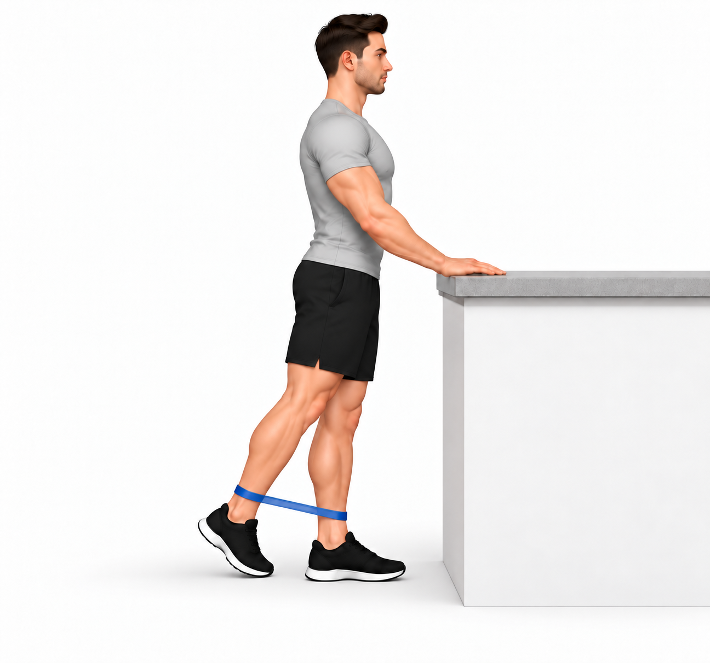

Progressão pela resposta clínica, sem semanas fixas.
Recomendações desta fase
O seu plano
Faça as opções selecionadas para o seu objetivo. Os elásticos são progressões, não uma obrigação para todos. Aprenda a resistência e a amplitude adequadas antes de treinar sozinho.
Frequência e esforço
Força habitualmente em 2–3 dias por semana, em dias alternados. Termine inicialmente com capacidade para mais 2–3 repetições, sem perder controlo.
Progressão
Se tolerar bem várias sessões, aumente uma variável de cada vez: repetições, resistência, amplitude ou duração. Mantenha a caminhada ou bicicleta na dose tolerada.
Resposta ao exercício
Desconforto ligeiro pode acontecer. Reduza ou pare se a dor aumentar, surgir uma pontada forte ou começar a coxear. Se piorarem o sono ou a manhã seguinte, reduza a dose e peça ajuste do plano.
No dia a dia
Adapte a altura da cadeira se isso facilitar levantar-se. Intercale períodos sentado com movimento confortável. Use calçado estável e a ajuda de marcha prescrita, se indicada. Não precisa de forçar posições dolorosas nem evitar para sempre movimentos que tolera.
Quando pedir ajuda
Procure avaliação urgente perante dor súbita e forte na virilha com dificuldade em apoiar a perna, sobretudo após queda, ou febre com dor importante na anca. Contacte a equipa se surgir dor nova e persistente em repouso ou à noite, perda rápida de movimento ou agravamento continuado.

Ponte glútea bilateral — anca
Sugestão inicial: 2 × 12 repetições
Repouso: 60 s
Como fazer e adaptar
Posição inicial
- De costas num tapete, joelhos fletidos, pés apoiados à largura da bacia e braços ao lado do corpo.
Execução
- Empurre o chão com os dois pés e eleve a bacia apenas até à altura tolerada.
- Regresse lentamente, sem arquear excessivamente a região lombar.
Cuidados
- Distribua o esforço pelos dois pés e não deixe os joelhos cair para dentro.
- Faça apenas a dose e a amplitude prescritas. Pare perante dor aguda ou perda de controlo.
Sugestão inicial ajustável: 2 séries de 12 repetições, com 60 segundos de repouso. Confirmar carga, amplitude, apoio e frequência para este doente. Fazer apenas a seleção prescrita. Reduzir se piorarem a marcha, o sono ou a manhã seguinte.

Sentar e levantar de cadeira — anca
Sugestão inicial: 3 × 8 repetições
Repouso: 90 s
Como fazer e adaptar
Posição inicial
- Cadeira firme encostada à parede, com altura que permita levantar sem esforço excessivo. Pés apoiados à largura da bacia.
Execução
- Incline ligeiramente o tronco para a frente e levante-se sem impulso.
- Volte a sentar-se devagar, mantendo os joelhos na direção dos pés.
Cuidados
- Use apoio dos braços se necessário; reduza-o apenas quando conseguir.
- Ajuste altura e amplitude ao conforto.
- Faça apenas a dose e a amplitude prescritas. Pare perante dor aguda ou perda de controlo.
- A imagem mostra a variante sem carga. Acrescente resistência apenas se prescrita e após ensino da técnica.
Sugestão inicial ajustável: 3 séries de 8 repetições, com 90 segundos de repouso. Confirmar carga, amplitude, apoio e frequência para este doente. Fazer apenas a seleção prescrita. Reduzir se piorarem a marcha, o sono ou a manhã seguinte.

Abdução da anca com elástico
Sugestão inicial: 2 × 10 repetições
Repouso: 60 s
Como fazer e adaptar
Posição inicial
- De pé com apoio estável disponível, elástico leve nos tornozelos e pés paralelos à largura da bacia.
Execução
- Afaste lateralmente a perna a exercitar na amplitude prescrita, sem inclinar o tronco.
- Regresse devagar até à largura inicial; não deixe a perna cruzar a linha do corpo.
Cuidados
- A imagem demonstra a variante sem apoio; use apoio da mão se necessário.
- Aumente a resistência só mantendo controlo da bacia e boa tolerância.
- Faça apenas a dose e a amplitude prescritas. Pare perante dor aguda ou perda de controlo.
Sugestão inicial ajustável: 2 séries de 10 repetições, com 60 segundos de repouso. Dose no lado selecionado; adaptar ao treino de ambos os lados se indicado. Confirmar carga, amplitude, apoio e frequência para este doente. Fazer apenas a seleção prescrita. Reduzir se piorarem a marcha, o sono ou a manhã seguinte.

Extensão da anca em pé com elástico
Sugestão inicial: 2 × 10 repetições
Repouso: 60 s
Como fazer e adaptar
Posição inicial
- De pé diante de apoio estável, elástico em laço acima dos tornozelos, pés paralelos e tronco direito.
Execução
- Leve a perna a exercitar um pouco para trás, contra uma resistência ligeira.
- Regresse lentamente, sem deixar o elástico puxar a perna de forma brusca.
Cuidados
- A amplitude mantém-se curta e tolerada. Não compensar com a região lombar.
- Comece com elástico leve e bem colocado, sem apertar a pele.
- Faça apenas a dose e a amplitude prescritas. Pare perante dor aguda ou perda de controlo.
Sugestão inicial ajustável: 2 séries de 10 repetições, com 60 segundos de repouso. Dose no lado selecionado; adaptar ao treino de ambos os lados se indicado. Confirmar carga, amplitude, apoio e frequência para este doente. Fazer apenas a seleção prescrita. Reduzir se piorarem a marcha, o sono ou a manhã seguinte.

Subida de degrau baixo com apoio — anca
Sugestão inicial: 2 × 8 repetições
Repouso: 60 s
Como fazer e adaptar
Posição inicial
- Diante de um degrau baixo, firme e antiderrapante, com corrimão ao lado. Pé da perna a exercitar totalmente apoiado no degrau.
Execução
- Suba com controlo, sem impulso excessivo da perna de trás.
- Desça devagar e repita na altura e amplitude prescritas.
Cuidados
- Mantenha o joelho orientado com o pé e a bacia controlada.
- Use o corrimão. Não existe uma altura obrigatória; não use bancos instáveis.
- Faça apenas a dose e a amplitude prescritas. Pare perante dor aguda ou perda de controlo.
Sugestão inicial ajustável: 2 séries de 8 repetições, com 60 segundos de repouso. Dose no lado selecionado; adaptar ao treino de ambos os lados se indicado. Confirmar carga, amplitude, apoio e frequência para este doente. Fazer apenas a seleção prescrita. Reduzir se piorarem a marcha, o sono ou a manhã seguinte.

Elevação bilateral dos calcanhares — anca
Sugestão inicial: 2 × 12 repetições
Repouso: 60 s
Como fazer e adaptar
Posição inicial
- De pé no chão plano, pés paralelos e mãos num apoio estável.
Execução
- Eleve os dois calcanhares lentamente, mantendo a parte anterior dos pés apoiada.
- Baixe os calcanhares com controlo até ao chão.
Cuidados
- Distribua o peso pelos dois pés. Não usar um degrau nesta variante.
- Reduza a amplitude ou a dose se o joelho ou o tornozelo agravarem.
- Faça apenas a dose e a amplitude prescritas. Pare perante dor aguda ou perda de controlo.
Sugestão inicial ajustável: 2 séries de 12 repetições, com 60 segundos de repouso. Confirmar carga, amplitude, apoio e frequência para este doente. Fazer apenas a seleção prescrita. Reduzir se piorarem a marcha, o sono ou a manhã seguinte.